Friends, Foes, and Folks of the Fallout Wastes
The Fallout universe is packed with unforgettable characters — from loyal companions and quirky wastelanders to shady Vault-Tec scientists and power-hungry faction leaders. Some are there to help you, some are out to ruin your day, and some are just trying to survive in their own weird way. This directory breaks down the most important figures across the games, including the Overseers who enforced Vault-Tec's twisted experiments, the companions who'll watch your back (or steal your stuff), and the memorable personalities you'll meet wandering the wastes.
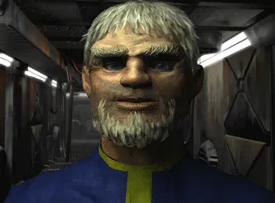
Jacoren Fallout 1
Overseer of Vault 13. Pragmatic, cold, and ultimately exiles the Vault Dweller to “protect” his people.
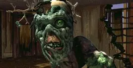
Harold Fallout 1 & 2
Lovable ghoul with a tree growing out of his head. Wise, funny, and one of the few recurring characters across the series.

President Dick Richardson Fallout 2
President of the Enclave in Fallout 2. Smooth-talking, ruthless, and convinced genocide is “for the greater good.”

Frank Horrigan Fallout 2
Enclave's ultimate super-soldier. Huge, terrifying, and basically a walking tank in power armor.
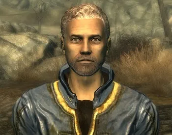
James Fallout 3
Father of the Lone Wanderer in Fallout 3. Kindhearted scientist who leads Project Purity — and sets the main story in motion.
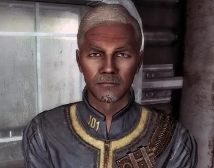
Alphonse Almodovar Fallout 3
Paranoid ruler of Vault 101. Obsessed with keeping the vault sealed, even at the cost of lives.
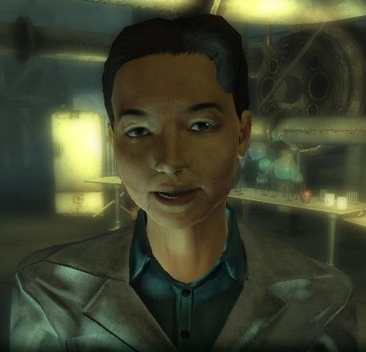
Dr.Madison Li Fallout 3
Brilliant scientist who works on Project Purity. Torn between the Brotherhood, the Institute, and her own ethics.
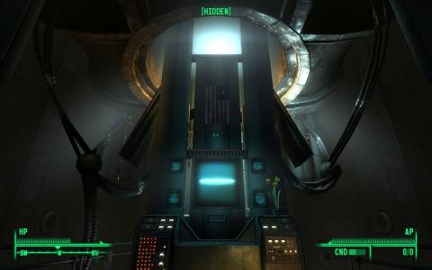
President John Henry Eden Fallout 3
Patriotic radio voice of the Enclave. Secretly a self-aware AI clinging to the dream of “America.”

Dr.Stanislaus Braun Fallout 3
Vault-Tec scientist and sadistic VR overlord of Vault 112. Enjoys torturing his vault residents for fun.
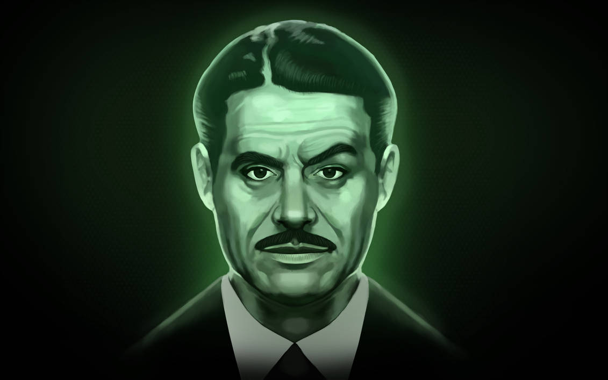
Mr. House Fallout New Vegas
Pre-war tycoon turned immortal overlord of New Vegas. Coldly logical, but always betting on himself.
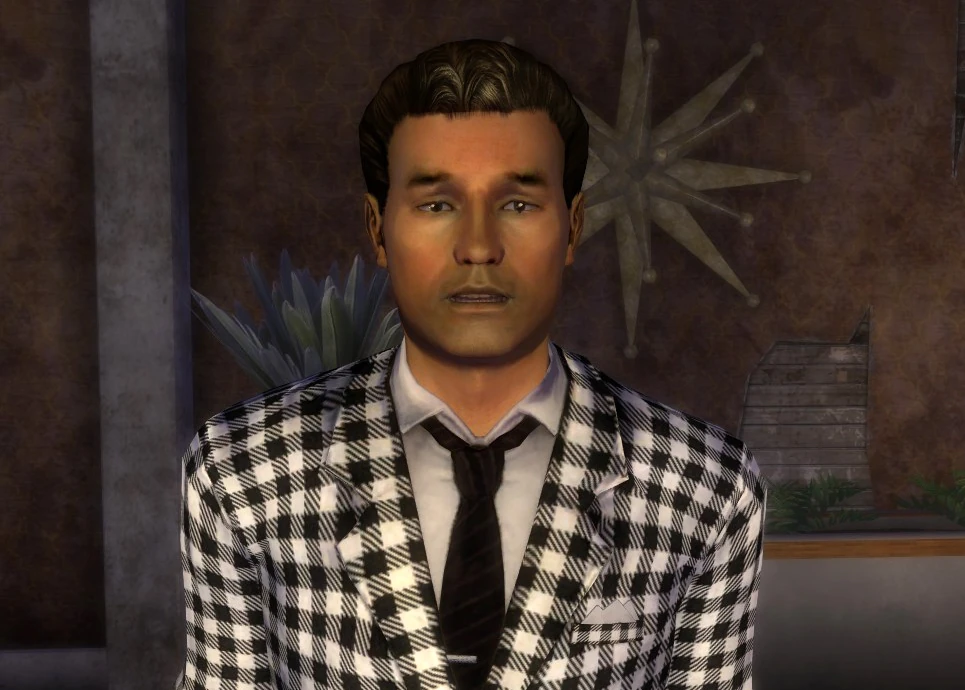
Benny Fallout New Vegas
Sleazy chairman of the Tops Casino. Tried to kill the Courier — in style — with a bullet to the head.
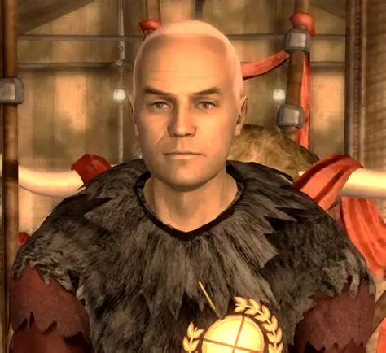
Caesar Fallout New Vegas
Charismatic but brutal leader of Caesar's Legion. Fancies himself a new Roman emperor.
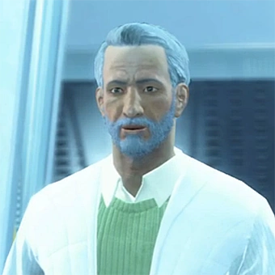
Shaun Fallout 4
The Sole Survivor's son. Grows up to lead the Institute, making him both a family reunion and the main moral dilemma.
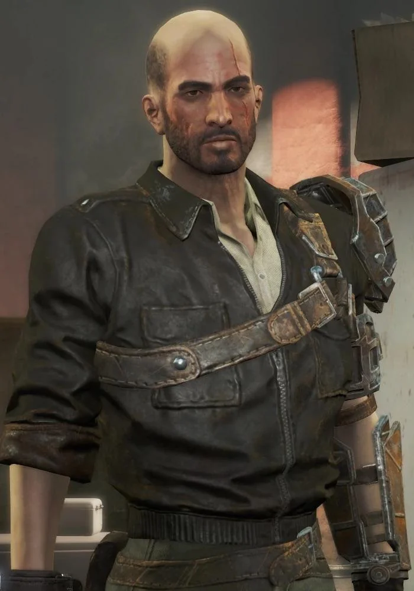
Kellog Fallout 4
Ruthless mercenary working for the Institute. Known for his cybernetics, tragic past, and very bad parenting skills.
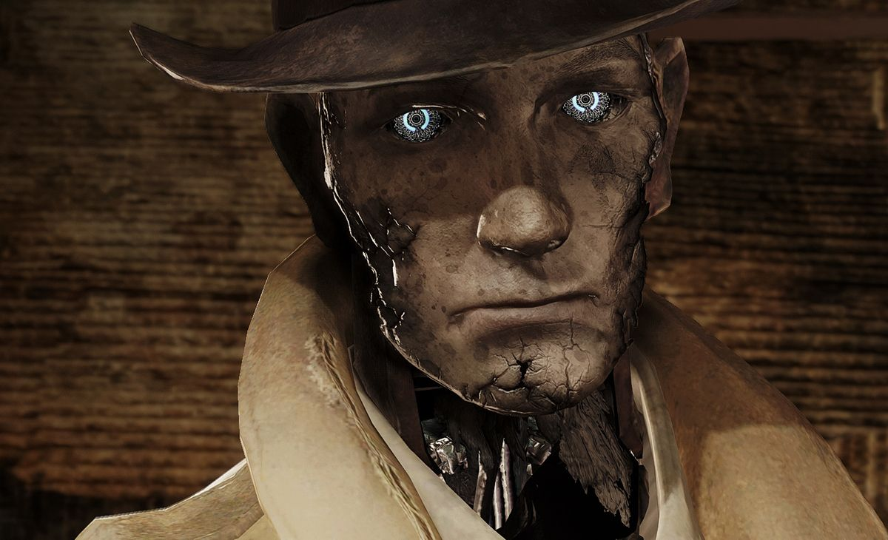
Nick Valentine Fallout 4
Noir-style synth detective with a tragic human past. Wisecracking, compassionate, and one of Fallout's most beloved companions.
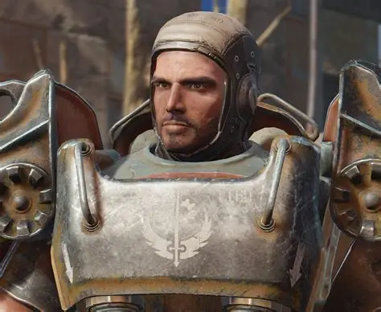
Paladin Danse
Loyal Brotherhood soldier with a secret: he's a synth. His storyline forces tough questions about identity.
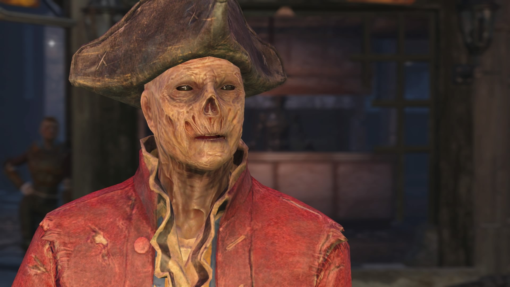
Hancock Fallout 4
Cool ghoul mayor of Goodneighbor. Charismatic, drug-loving, and all about personal freedom.
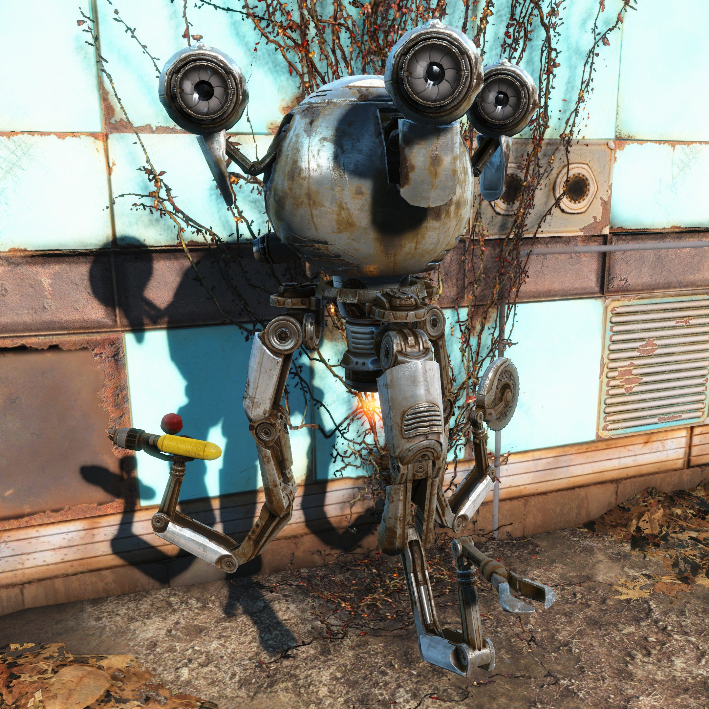
Codsworth Fallout 4
Your faithful Mister Handy robot butler. Polite, loyal, and still calls you “Sir” or “Ma'am” 200 years later.
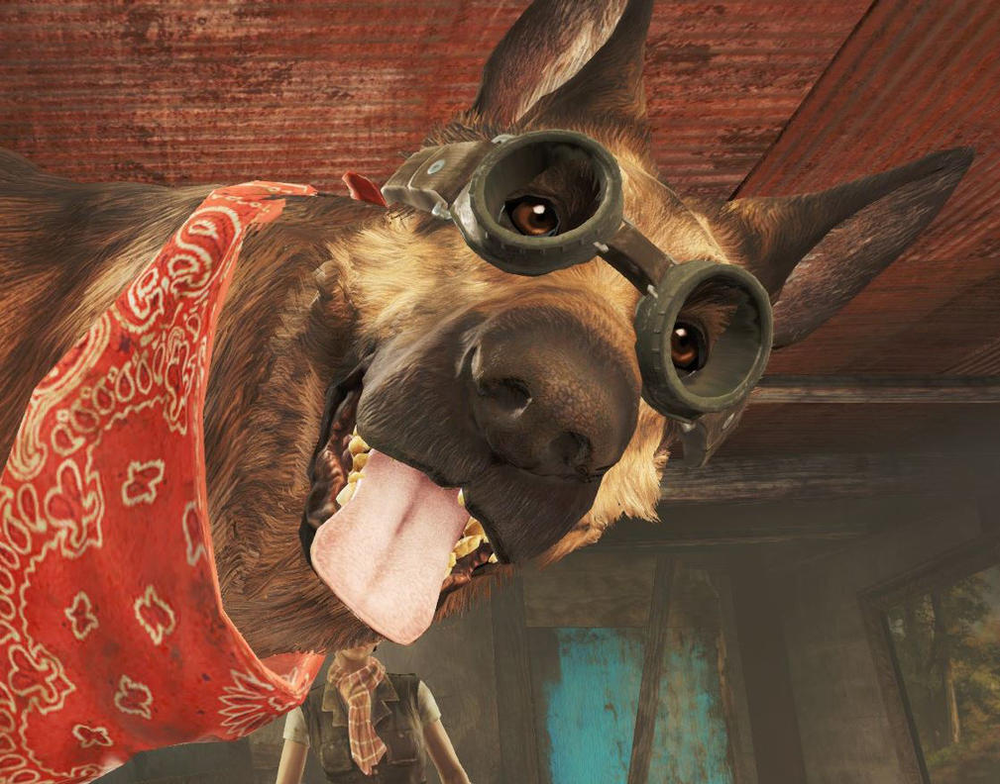
Dogmeat Fallout 1, 3 & 4
The eternal wasteland companion. Loyal, fearless, and the one companion everyone loves.